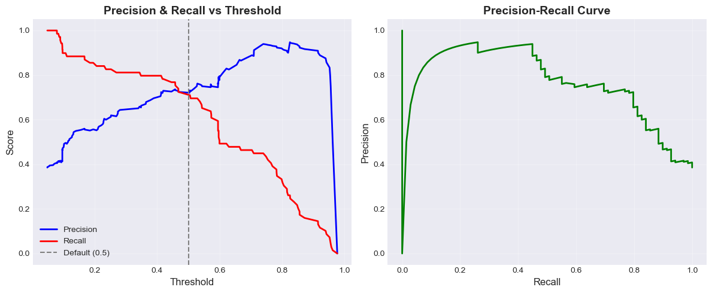
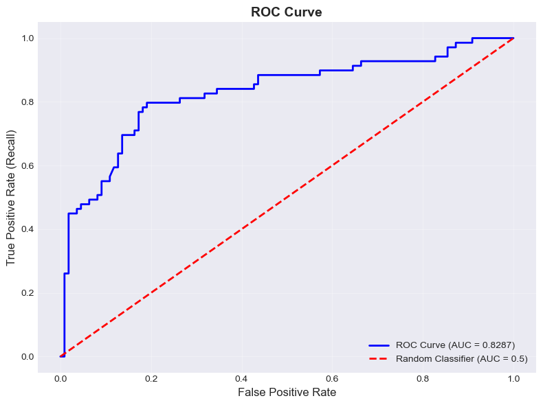

Understand the importance of stratified splitting for imbalanced datasets
Build production-ready models using sklearn pipelines with ColumnTransformer
Interpret confusion matrices and identify different types of prediction errors
Calculate and understand precision, recall, and F1 score
Analyze the precision-recall tradeoff when changing classification thresholds
Evaluate models using ROC curves and AUC scores
Choose appropriate evaluation metrics based on the problem context and costs of different error types
9.2 Import Libraries and Load Data
We will use the same titanic dataset and model preparation as the previous chapter for this chapter
import pandas as pdimport numpy as npimport seaborn as snsimport matplotlib.pyplot as plt# For statsmodels implementationimport statsmodels.formula.api as smf# For sklearn implementationfrom sklearn.linear_model import LogisticRegressionfrom sklearn.model_selection import train_test_splitfrom sklearn.metrics import confusion_matrix, accuracy_score, precision_score, recall_score# Set display optionspd.set_option('display.max_columns', None)plt.style.use('seaborn-v0_8-darkgrid')print("Libraries imported successfully!")
Libraries imported successfully!
# Load the Titanic datasettitanic = sns.load_dataset('titanic')print(f"Dataset shape: {titanic.shape}")print(f"\nFirst few rows:")titanic.head()
Dataset shape: (891, 15)
First few rows:
survived
pclass
sex
age
sibsp
parch
fare
embarked
class
who
adult_male
deck
embark_town
alive
alone
0
0
3
male
22.0
1
0
7.2500
S
Third
man
True
NaN
Southampton
no
False
1
1
1
female
38.0
1
0
71.2833
C
First
woman
False
C
Cherbourg
yes
False
2
1
3
female
26.0
0
0
7.9250
S
Third
woman
False
NaN
Southampton
yes
True
3
1
1
female
35.0
1
0
53.1000
S
First
woman
False
C
Southampton
yes
False
4
0
3
male
35.0
0
0
8.0500
S
Third
man
True
NaN
Southampton
no
True
9.3 Data Preparation
9.3.1 Imputing missing values
Like linear regression, logistic regression does not tolerate missing values
# Check for missing values in our columns of interestcolumns_of_interest = ['survived', 'age', 'fare', 'sex', 'pclass']print("Missing values in columns of interest:")print(titanic[columns_of_interest].isnull().sum())
Missing values in columns of interest:
survived 0
age 177
fare 0
sex 0
pclass 0
dtype: int64
There are 177 missing values in Age, which is a key predictor. Dropping all rows with missing values would result in a substantial loss of useful information. A simple and reasonable approach is group-wise median imputation: fill in missing ages using the median Age within each combination of Sex and Pclass.
# impute median age for each combination of sex and pclasstitanic['age'] = titanic.groupby(['sex', 'pclass'])['age'].transform(lambda x: x.fillna(x.median()))
Let’s check again
columns_of_interest = ['survived', 'age', 'fare', 'sex', 'pclass']print("Missing values in columns of interest:")print(titanic[columns_of_interest].isnull().sum())
Missing values in columns of interest:
survived 0
age 0
fare 0
sex 0
pclass 0
dtype: int64
9.3.2 Check Target Distribution
Let’s examine the distribution of the target variable to determine whether the dataset is balanced.
The dataset shows moderate class imbalance (about 62% non-survived vs 38% survived).
For such datasets, we need to do stratified splitting to make sure the proportion of classes is preserved in both train and test sets.
How to do stratified splitting:
Use the stratify parameter in train_test_split():
train_df, test_df = train_test_split( titanic, test_size=0.2, random_state=42, stratify=titanic['survived'] # Pass the target variable here, or stratify=y)
This ensures that both train and test sets have the same class distribution as the original dataset.
# Compare random vs stratified splittingprint("ORIGINAL DATASET:")original_props = titanic['survived'].value_counts(normalize=True)print(f" Survived: {original_props[1]:.1%} | Died: {original_props[0]:.1%}")# Random splitting (without stratify)train_random, test_random = train_test_split(titanic, test_size=0.2, random_state=42)print("\nRANDOM SPLIT (without stratify):")print(f" Train - Survived: {train_random['survived'].mean():.1%}")print(f" Test - Survived: {test_random['survived'].mean():.1%}")# Stratified splitting (with stratify)train_strat, test_strat = train_test_split(titanic, test_size=0.2, random_state=42, stratify=titanic['survived'])print("\nSTRATIFIED SPLIT (with stratify):")print(f" Train - Survived: {train_strat['survived'].mean():.1%}")print(f" Test - Survived: {test_strat['survived'].mean():.1%}")print("\n✓ Stratified splitting maintains the same proportions in both sets")print("✓ This ensures reliable model evaluation, especially for imbalanced data")
ORIGINAL DATASET:
Survived: 38.4% | Died: 61.6%
RANDOM SPLIT (without stratify):
Train - Survived: 37.6%
Test - Survived: 41.3%
STRATIFIED SPLIT (with stratify):
Train - Survived: 38.3%
Test - Survived: 38.5%
✓ Stratified splitting maintains the same proportions in both sets
✓ This ensures reliable model evaluation, especially for imbalanced data
# Split into train and test sets with stratification for the rest of the taskstrain_df, test_df = train_test_split(titanic, test_size=0.2, random_state=42, stratify=titanic['survived'])
9.5 Scikit-learn Implementation
Since sklearn is optimized for prediction and machine learning workflows. we will stick with sklearn
9.5.1 Pipeline Implementation
Why use Pipelines?
In the previous chapter, we’ve manually created dummy variables using pd.get_dummies(). While this works, sklearn’s Pipeline approach offers several advantages:
Prevents data leakage: Ensures transformations are fit only on training data
Cleaner code: Combines preprocessing and modeling in one object
Production-ready: Easier to deploy and maintain
Reproducibility: All steps are encapsulated in one pipeline
Key components: - ColumnTransformer: Applies different transformations to different columns - OneHotEncoder: Converts categorical variables to dummy variables - Pipeline: Chains preprocessing and model fitting together
Let’s implement the same logistic regression model using a pipeline (with regularization to match statsmodels):
# Import required components for pipelinefrom sklearn.pipeline import Pipelinefrom sklearn.compose import ColumnTransformerfrom sklearn.preprocessing import OneHotEncoder# Define which columns are categorical and which are numericcategorical_features = ['sex']numeric_features = ['age', 'fare', 'pclass']y_train = train_df['survived']y_test = test_df['survived']# Create the column transformer# OneHotEncoder with drop='first' mimics the drop_first=True in pd.get_dummiespreprocessor = ColumnTransformer( transformers=[ ('num', 'passthrough', numeric_features), # Keep numeric features as-is ('cat', OneHotEncoder(drop='first'), categorical_features) # Encode categorical ])# Create the pipeline: preprocessing + logistic regressionpipeline_model = Pipeline(steps=[ ('preprocessor', preprocessor), ('classifier', LogisticRegression(random_state=42))])# Fit the pipeline on training data# Note: We pass the original dataframe with categorical variablesX_train_raw = train_df[['age', 'fare', 'sex', 'pclass']]X_test_raw = test_df[['age', 'fare', 'sex', 'pclass']]pipeline_model.fit(X_train_raw, y_train)print("Pipeline model fitted successfully!")print("\nPipeline structure:")print(pipeline_model)
# Extract the trained logistic regression model from the pipelinepipeline_logit = pipeline_model.named_steps['classifier']# Get feature names after transformationfeature_names = numeric_features + ['sex_male'] # OneHotEncoder creates sex_male (drops sex_female)print("Pipeline Logistic Regression Coefficients (C=np.inf):")print(f"\nCoefficients:")for feature, coef inzip(feature_names, pipeline_logit.coef_[0]):print(f" {feature:20s}: {coef:8.4f}")print(f"\nIntercept: {pipeline_logit.intercept_[0]:.4f}")# Make predictionspipeline_train_pred = pipeline_model.predict(X_train_raw)pipeline_test_pred = pipeline_model.predict(X_test_raw)# Calculate accuracypipeline_train_accuracy = accuracy_score(y_train, pipeline_train_pred)pipeline_test_accuracy = accuracy_score(y_test, pipeline_test_pred)print(f"\nPipeline Model Performance:")print(f" Training Accuracy: {pipeline_train_accuracy:.4f} ({pipeline_train_accuracy:.2%})")print(f" Test Accuracy: {pipeline_test_accuracy:.4f} ({pipeline_test_accuracy:.2%})")
Pipeline Logistic Regression Coefficients (C=np.inf):
Coefficients:
age : -0.0389
fare : 0.0010
pclass : -1.2189
sex_male : -2.4830
Intercept: 4.8699
Pipeline Model Performance:
Training Accuracy: 0.8006 (80.06%)
Test Accuracy: 0.7821 (78.21%)
9.6 Performance Evaluation
The dataset shows moderate class imbalance (about 62% non-survived vs 38% survived). While accuracy is a useful metric, for imbalanced datasets we should consider additional metrics:
Confusion Matrix: Shows the breakdown of correct and incorrect predictions
Precision: Of all positive predictions, how many were correct?
Recall (Sensitivity): Of all actual positives, how many did we find?
F1 Score: Harmonic mean of precision and recall
ROC-AUC: Overall measure of model discrimination ability
Let’s evaluate our model using these metrics.
9.6.1 Confusion Matrix
A confusion matrix shows the breakdown of predictions:
Confusion Matrix:
==================================================
Predicted
Died | Survived
Actual Died 91 | 19
Actual Survived 20 | 49
==================================================
Precision = \(\frac{TP}{TP + FP}\) = “Of all predicted survivors, how many actually survived?” - Focuses on the quality of positive predictions - High precision = few false alarms
Recall (Sensitivity) = \(\frac{TP}{TP + FN}\) = “Of all actual survivors, how many did we correctly identify?” - Focuses on finding all positive cases - High recall = few missed cases
F1 Score = \(2 \times \frac{Precision \times Recall}{Precision + Recall}\) = Harmonic mean of precision and recall - Balances precision and recall - Useful when you need a single metric
By default, sklearn uses a threshold of 0.5 to classify predictions: - If probability ≥ 0.5 → Predict 1 (Survived) - If probability < 0.5 → Predict 0 (Died)
What happens when we change the threshold?
Higher threshold (e.g., 0.7): More conservative predictions
# Visualize the precision-recall tradeoff across many thresholdsfrom sklearn.metrics import precision_recall_curveprecisions, recalls, thresholds_pr = precision_recall_curve(y_test, y_pred_proba)plt.figure(figsize=(12, 5))# Plot 1: Precision and Recall vs Thresholdplt.subplot(1, 2, 1)plt.plot(thresholds_pr, precisions[:-1], 'b-', label='Precision', linewidth=2)plt.plot(thresholds_pr, recalls[:-1], 'r-', label='Recall', linewidth=2)plt.axvline(x=0.5, color='gray', linestyle='--', label='Default (0.5)')plt.xlabel('Threshold', fontsize=12)plt.ylabel('Score', fontsize=12)plt.title('Precision & Recall vs Threshold', fontsize=14, fontweight='bold')plt.legend()plt.grid(alpha=0.3)# Plot 2: Precision-Recall Curveplt.subplot(1, 2, 2)plt.plot(recalls, precisions, 'g-', linewidth=2)plt.xlabel('Recall', fontsize=12)plt.ylabel('Precision', fontsize=12)plt.title('Precision-Recall Curve', fontsize=14, fontweight='bold')plt.grid(alpha=0.3)plt.tight_layout()plt.show()print("Interpretation:")print(" • Left plot: Shows how precision and recall change with different thresholds")print(" • Right plot: Precision-Recall curve - higher is better")print(" • The curves show the fundamental tradeoff between precision and recall")

Interpretation:
• Left plot: Shows how precision and recall change with different thresholds
• Right plot: Precision-Recall curve - higher is better
• The curves show the fundamental tradeoff between precision and recall
9.6.4 ROC Curve and AUC Score
ROC (Receiver Operating Characteristic) Curve plots: - X-axis: False Positive Rate (FPR) = \(\frac{FP}{FP + TN}\) = “Of all actual negatives, how many did we incorrectly predict as positive?” - Y-axis: True Positive Rate (TPR) = Recall = \(\frac{TP}{TP + FN}\)
AUC (Area Under Curve): Measures the overall ability of the model to discriminate between classes - AUC = 1.0: Perfect classifier - AUC = 0.5: Random classifier (no better than flipping a coin) - AUC > 0.8: Generally considered good
The ROC curve is threshold-independent - it shows model performance across all possible thresholds.
# Calculate ROC curve and AUCfrom sklearn.metrics import roc_curve, roc_auc_score# Calculate ROC curvefpr, tpr, thresholds_roc = roc_curve(y_test, y_pred_proba)# Calculate AUCauc_score = roc_auc_score(y_test, y_pred_proba)print(f"ROC-AUC Score: {auc_score:.4f}")print(f"\nInterpretation: The model has a {auc_score:.1%} probability of ranking")print(f"a randomly chosen positive example higher than a randomly chosen negative example.")# Plot ROC curveplt.figure(figsize=(8, 6))plt.plot(fpr, tpr, 'b-', linewidth=2, label=f'ROC Curve (AUC = {auc_score:.4f})')plt.plot([0, 1], [0, 1], 'r--', linewidth=2, label='Random Classifier (AUC = 0.5)')plt.xlabel('False Positive Rate', fontsize=12)plt.ylabel('True Positive Rate (Recall)', fontsize=12)plt.title('ROC Curve', fontsize=14, fontweight='bold')plt.legend(loc='lower right')plt.grid(alpha=0.3)plt.tight_layout()plt.show()print("\nKey Points:")print(f" ✓ AUC = {auc_score:.4f} indicates {'good'if auc_score >0.8else'moderate'} discrimination ability")print(f" ✓ Our model performs {'much 'if auc_score >0.8else''}better than random guessing")print(f" ✓ ROC-AUC is useful for comparing models regardless of threshold choice")
ROC-AUC Score: 0.8287
Interpretation: The model has a 82.9% probability of ranking
a randomly chosen positive example higher than a randomly chosen negative example.

Key Points:
✓ AUC = 0.8287 indicates good discrimination ability
✓ Our model performs much better than random guessing
✓ ROC-AUC is useful for comparing models regardless of threshold choice
9.6.5 Summary: Choosing the Right Metric
Different metrics are appropriate for different situations:
Metric
When to Use
What It Tells You
Accuracy
Balanced datasets
Overall correctness
Precision
False positives are costly (e.g., spam detection)
Quality of positive predictions
Recall
False negatives are costly (e.g., disease diagnosis)
For imbalanced datasets: - Don’t rely solely on accuracy - Consider precision, recall, and F1 score - Use ROC-AUC for model comparison - Choose your threshold based on the cost of different error types
Next steps: - Experiment with different thresholds based on your use case - Try different models and compare their ROC-AUC scores - Consider techniques like class weighting or resampling for severe imbalance